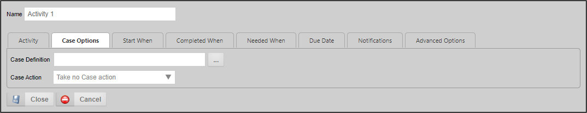
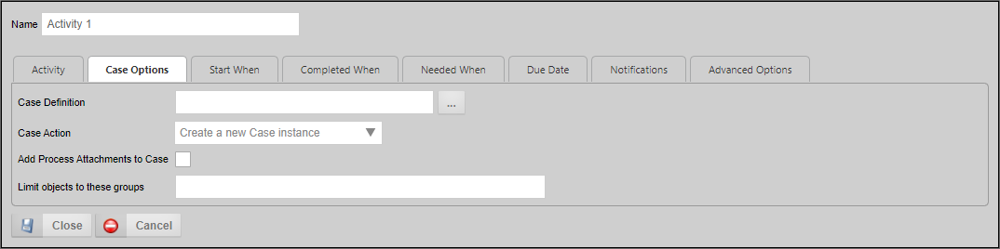
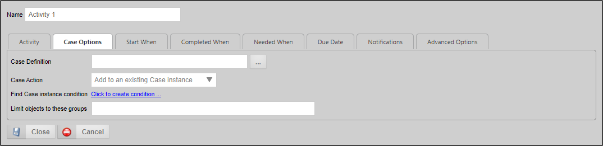
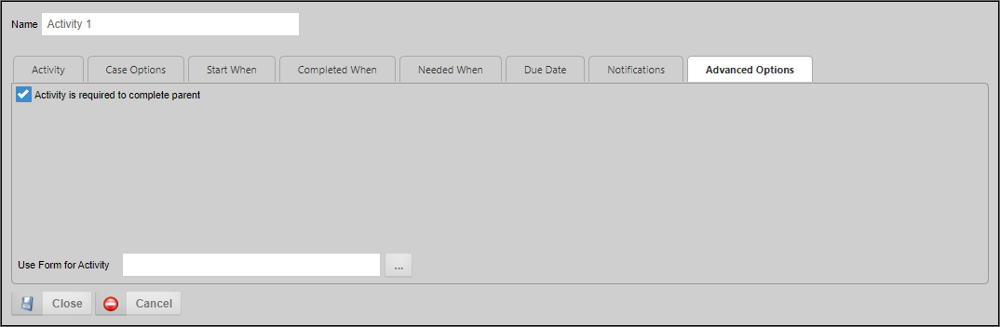

The Case activity enables you to perform Case Management actions automatically, without requiring any user interaction. In addition to the common properties tabs that appear for all Timeline activities, the configuration settings below are unique to this activity type.
The Case Activity has a Case Options tab where Case Management operations can be selected.

An Object Picker that enables you to select the Case definition on which the action will be conducted.
The Case Action property consists of a dropdown that identifies the action the activity will take. the available options are:
If you select either Create a new Case instance or Add to an Existing Case Instance from the Case Action property, the following options will become available:

Checking this box will add all attachments to the selected case, unless modified by the Limit objects to these groups property.
This property will accept a single Group name, or a comma-separated list of Group names to copy only attachments in the specified group(s). Additionally this property enables you to enter "" (double quotation marks) into the property, to return only those objects that have no Group name specified.
If you select the Add... or Remove... options from the Case Action property, you can identify the specific Case Instance to modify by using the Condition Builder to create a condition set that will return the desired case instance.


For Process Director v5.1 and higher, this property enables you to choose a specific form definition to use for conditionals using field names. This is useful when you are using multiple form definitions with the process.